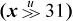
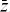

Some of the formulas in this section find application in later chapters.
Use the following formula to turn off the rightmost 1-bit in a word, producing 0 if none (e.g., 01011000 ⇒ 01010000):
x & (x – 1)
This can be used to determine if an unsigned integer is a power of 2 or is 0: apply the formula followed by a 0-test on the result.
Use the following formula to turn on the rightmost 0-bit in a word, producing all 1’s if none (e.g., 10100111 ⇒ 10101111):
x | (x + 1)
Use the following formula to turn off the trailing 1’s in a word, producing x if none (e.g., 10100111 ⇒ 10100000):
x & (x + 1)
This can be used to determine if an unsigned integer is of the form 2n– 1, 0, or all 1’s: apply the formula followed by a 0-test on the result.
Use the following formula to turn on the trailing 0’s in a word, producing x if none (e.g., 10101000 ⇒ 10101111):
x | (x– 1)
Use the following formula to create a word with a single 1-bit at the position of the rightmost 0-bit in x, producing 0 if none (e.g., 10100111 ⇒ 00001000):
¬x & (x + 1)
Use the following formula to create a word with a single 0-bit at the position of the rightmost 1-bit in x, producing all 1’s if none (e.g., 10101000 ⇒ 11110111):
¬x | (x – 1)
Use one of the following formulas to create a word with 1’s at the positions of the trailing 0’s in x, and 0’s elsewhere, producing 0 if none (e.g., 01011000 ⇒ 00000111):
The first formula has some instruction-level parallelism.
Use the following formula to create a word with 0’s at the positions of the trailing 1’s in x, and 0’s elsewhere, producing all 1’s if none (e.g., 10100111 ⇒ 11111000):
¬x | (x + 1)
Use the following formula to isolate the rightmost 1-bit, producing 0 if none (e.g., 01011000 ⇒ 00001000):
x & (−x)
Use the following formula to create a word with 1’s at the positions of the rightmost 1-bit and the trailing 0’s in x, producing all 1’s if no 1-bit, and the integer 1 if no trailing 0’s (e.g., 01011000 ⇒ 00001111):
x ⊕ (x − 1)
Use the following formula to create a word with 1’s at the positions of the rightmost 0-bit and the trailing 1’s in x, producing all 1’s if no 0-bit, and the integer 1 if no trailing 1’s (e.g., 01010111 ⇒ 00001111):
x ⊕ (x + 1)
Use either of the following formulas to turn off the rightmost contiguous string of 1’s (e.g., 01011100 ==> 01000000) [Wood]:
(((x | (x − 1)) + 1) & x), or
((x & −x) + x)&x
These can be used to determine if a nonnegative integer is of the form 2j − 2k for some j ≥ k≥ 0: apply the formula followed by a 0-test on the result.
The logical identities known as De Morgan’s laws can be thought of as distributing, or “multiplying in,” the not sign. This idea can be extended to apply to the expressions of this section, and a few more, as shown here. (The first two are De Morgan’s laws.)
As an example of the application of these formulas, ¬(x | –(x + 1)) = ¬x &¬–(x + 1) = ¬x & ((x + 1) – 1) = ¬x & x = 0.
There is a simple test to determine whether or not a given function can be implemented with a sequence of add’s, subtract’s, and’s, or’s, and not’s [War]. We can, of course, expand the list with other instructions that can be composed from the basic list, such as shift left by a fixed amount (which is equivalent to a sequence of add’s), or multiply. However, we exclude instructions that cannot be composed from the list. The test is contained in the following theorem.
THEOREM. A function mapping words to words can be implemented with word-parallel add, subtract, and, or, and not instructions if and only if each bit of the result depends only on bits at and to the right of each input operand.
That is, imagine trying to compute the rightmost bit of the result by looking only at the rightmost bit of each input operand. Then, try to compute the next bit to the left by looking only at the rightmost two bits of each input operand, and continue in this way. If you are successful in this, then the function can be computed with a sequence of add’s, and’s, and so on. If the function cannot be computed in this right-to-left manner, then it cannot be implemented with a sequence of such instructions.
The interesting part of this is the latter statement, and it is simply the contra-positive of the observation that the functions add, subtract, and, or, and not can all be computed in the right-to-left manner, so any combination of them must have this property.
To see the “if” part of the theorem, we need a construction that is a little awkward to explain. We illustrate it with a specific example. Suppose that a function of two variables x and y has the right-to-left computability property, and suppose that bit 2 of the result r is given by
We number bits from right to left, 0 to 31. Because bit 2 of the result is a function of bits at and to the right of bit 2 of the input operands, bit 2 of the result is “right-to-left computable.”
Arrange the computer words x, x shifted left two, and y shifted left one, as shown below. Also, add a mask that isolates bit 2.
Now, form the word-parallel and of lines 2 and 3, or the result with row 1 (following Equation (1)), and and the result with the mask (row 4 above). The result is a word of all 0’s except for the desired result bit in position 2. Perform similar computations for the other bits of the result, or the 32 resulting words together, and the result is the desired function.
This construction does not yield an efficient program; rather, it merely shows that it can be done with instructions in the basic list.
Using the theorem, we immediately see that there is no sequence of such instructions that turns off the leftmost 1-bit in a word, because to see if a certain 1-bit should be turned off, we must look to the left to see if it is the leftmost one. Similarly, there can be no such sequence for performing a right shift, or a rotate shift, or a left shift by a variable amount, or for counting the number of trailing 0’s in a word (to count trailing 0’s, the rightmost bit of the result will be 1 if there are an odd number of trailing 0’s, and we must look to the left of the rightmost position to determine that).
An application of the sort of bit twiddling discussed above is the problem of finding the next higher number after a given number that has the same number of 1-bits. You might very well wonder why anyone would want to compute that. It has application where bit strings are used to represent subsets. The possible members of a set are listed in a linear array, and a subset is represented by a word or sequence of words in which bit i is on if member i is in the subset. Set unions are computed by the logical or of the bit strings, intersections by and’s, and so on.
You might want to iterate through all the subsets of a given size. This is easily done if you have a function that maps a given subset to the next higher number (interpreting the subset string as an integer) with the same number of 1-bits.
A concise algorithm for this operation was devised by R. W. Gosper [HAK, item 175].1 Given a word x that represents a subset, the idea is to find the rightmost contiguous group of 1’s in x and the following 0’s, and “increment” that quantity to the next value that has the same number of 1’s. For example, the string xxx0 1111 0000, where xxx represents arbitrary bits, becomes xxx1 0000 0111. The algorithm first identifies the “smallest” 1-bit in x, with s = x &–x, giving 0000 0001 0000. This is added to x, giving r = xxx1 0000 0000. The 1-bit here is one bit of the result. For the other bits, we need to produce a right-adjusted string of n – 1 1’s, where n is the size of the rightmost group of 1’s in x. This can be done by first forming the exclusive or of r and x, which gives 0001 1111 0000 in our example.
This has two too many 1’s and needs to be right-adjusted. This can be accomplished by dividing it by s, which right-adjusts it (s is a power of 2), and shifting it right two more positions to discard the two unwanted bits. The final result is the or of this and r.
In computer algebra notation, the result is y in
A complete C procedure is given in Figure 2–1. It executes in seven basic RISC instructions, one of which is division. (Do not use this procedure with x = 0; that causes division by 0.)
If division is slow but you have a fast way to compute the number of trailing zeros function ntz(x), the number of leading zeros function nlz(x), or population count (pop(x) is the number of 1-bits in x), then the last line of Equation (2) can be replaced with one of the following formulas. (The first two methods can fail on a machine that has modulo 32 shifts.)

unsigned snoob(unsigned x) {
unsigned smallest, ripple, ones;
// x = xxx0 1111 0000
smallest = x & -x; // 0000 0001 0000
ripple = x + smallest; // xxx1 0000 0000
ones = x ^ ripple; // 0001 1111 0000
ones = (ones >> 2)/smallest; // 0000 0000 0111
return ripple | ones; // xxx1 0000 0111
}
FIGURE 2–1. Next higher number with same number of 1-bits.
We assume the reader is familiar with the elementary identities of ordinary algebra and Boolean algebra. Below is a selection of similar identities involving addition and subtraction combined with logical operations.

Equation (d) can be applied to itself repeatedly, giving –¬–¬x = x + 2, and so on. Similarly, from (e) we have ¬–¬– x = x – 2. So we can add or subtract any constant using only the two forms of complementation.
Equation (f) is the dual of (j), where (j) is the well-known relation that shows how to build a subtracter from an adder.
Equations (g) and (h) are from HAKMEM memo [HAK, item 23]. Equation (g) forms a sum by first computing the sum with carries ignored (x ⊕ y), and then adding in the carries. Equation (h) is simply modifying the addition operands so that the combination 0 + 1 never occurs at any bit position; it is replaced with 1 + 0.
It can be shown that in the ordinary addition of binary numbers with each bit independently equally likely to be 0 or 1, a carry occurs at each position with probability about 0.5. However, for an adder built by preconditioning the inputs using (g), the probability is about 0.25. This observation is probably not of value in building an adder, because for that purpose the important characteristic is the maximum number of logic circuits the carry must pass through, and using (g) reduces the number of stages the carry propagates through by only one.
Equations (k) and (l) are duals of (g) and (h), for subtraction. That is, (k) has the interpretation of first forming the difference ignoring the borrows (x ⊕ y), and then subtracting the borrows. Similarly, Equation (l) is simply modifying the subtraction operands so that the combination 1 – 1 never occurs at any bit position; it is replaced with 0 – 0.
Equation (n) shows how to implement exclusive or in only three instructions on a basic RISC. Using only and-or-not logic requires four instructions ((x | y) & ¬(x & y)). Similarly, (u) and (v) show how to implement and and or in three other elementary instructions, whereas using DeMorgan’s laws requires four.
Inequalities among binary logical expressions whose values are interpreted as unsigned integers are nearly trivial to derive. Here are two examples:

These can be derived from a list of all binary logical operations, shown in Table 2–1.
TABLE 2–1. THE 16 BINARY LOGICAL OPERATIONS
Let f(x, y) and g(x, y) represent two columns in Table 2–1. If for each row in which f(x,y) is 1, g(x,y) also is 1, then for all (x,y), f(x, y) g(x, y). Clearly, this extends to word-parallel logical operations. One can easily read off such relations (most of which are trivial) as (x & y) x (x | ¬ y), and so on. Furthermore, if two columns have a row in which one entry is 0 and the other is 1, and another row in which the entries are 1 and 0, respectively, then no inequality relation exists between the corresponding logical expressions. So the question of whether or not f(x, y) g(x, y) is completely and easily solved for all binary logical functions f and g.
Use caution when manipulating these relations. For example, for ordinary arithmetic, if x + y ≤ a and z ≤ x, then z + y ≤ a, but this inference is not valid if “+” is replaced with or.
Inequalities involving mixed logical and arithmetic expressions are more interesting. Below is a small selection.

The proofs of these are quite simple, except possibly for the relation |x − y| (x ⊕ y). By |x − y| we mean the absolute value of x − y, which can be computed within the domain of unsigned numbers as max(x, y) − min(x, y). This relation can be proven by induction on the length of x and y (the proof is a little easier if you extend them on the left rather than on the right).
If your machine does not have an instruction for computing the absolute value, this computation can usually be done in three or four branch-free instructions. First, compute , and then one of the following:
By “2x” we mean, of course, x + x or x << 1.
If you have fast multiplication by a variable whose value is ±1, the following will do:
The following formula can be used to compute the average of two unsigned integers, ⌊(x + y)/2⌋ without causing overflow [Dietz]:
The formula below computes ⌈(x + y)/2⌉ for unsigned integers:
To compute the same quantities (“floor and ceiling averages”) for signed integers, use the same formulas, but with the unsigned shift replaced with a signed shift.
For signed integers, one might also want the average with the division by 2 rounded toward 0. Computing this “truncated average” (without causing overflow) is a little more difficult. It can be done by computing the floor average and then correcting it. The correction is to add 1 if, arithmetically, x + y is negative and odd. But x + y is negative if and only if the result of (3), with the unsigned shift replaced with a signed shift, is negative. This leads to the following method (seven instructions on the basic RISC, after commoning the subexpression x ⊕ y):
Some common special cases can be done more efficiently. If x and y are signed integers and known to be nonnegative, then the average can be computed as simply . The sum can overflow, but the overflow bit is retained in the register that holds the sum, so that the unsigned shift moves the overflow bit to the proper position and supplies a zero sign bit.
If x and y are unsigned integers and , or if x and y are signed integers and x ≤ y (signed comparison), then the average is given by x +  . These are floor averages, for example, the average of −1 and 0 is −1.
. These are floor averages, for example, the average of −1 and 0 is −1.
By “sign extension,” we mean to consider a certain bit position in a word to be the sign bit, and we wish to propagate that to the left, ignoring any other bits present. The standard way to do this is with shift left logical followed by shift right signed. However, if these instructions are slow or nonexistent on your machine, it can be done with one of the following, where we illustrate by propagating bit position 7 to the left:
The “+” above can also be “–” or “⊕.” The second formula is particularly useful if you know that the unwanted high-order bits are all 0’s, because then the and can be omitted.
If your machine does not have the shift right signed instruction, it can be computed using the formulas shown below. The first formula is from [GM], and the second is based on the same idea. These formulas hold for 0 ≤ n ≤ 31 and, if the machine has mod-64 shifts, the last holds for 0 ≤ n ≤ 63. The last formula holds for any n if by “holds” we mean “treats the shift amount to the same modulus as does the logical shift.”
When n is a variable, each formula requires five or six instructions on a basic RISC.
In the first two formulas, an alternative for the expression is 1<<31 − n.
If n is a constant, the first two formulas require only three instructions on many machines. If n = 31, the function can be done in two instructions with −.
The sign, or signum, function is defined by
It can be calculated with four instructions on most machines [Hop]:
If you don’t have shift right signed, then use the substitute noted at the end of Section 2–7, giving the following nicely symmetric formula (five instructions):

Comparison predicate instructions permit a three-instruction solution, with either
Finally, we note that the formula almost works; it fails only for x = –231.
The three-valued compare function, a slight generalization of the sign function, is defined by
There are both signed and unsigned versions, and unless otherwise specified, this section applies to both.
Comparison predicate instructions permit a three-instruction solution, an obvious generalization of Equations in (4):
A solution for unsigned integers on PowerPC is shown below [CWG]. On this machine, “carry” is “not borrow.”
subf R5,Ry,Rx # R5 <-- Rx - Ry.
subfc R6,Rx,Ry # R6 <-- Ry - Rx, set carry.
subfe R7,Ry,Rx # R7 <-- Rx - Ry + carry, set carry.
subfe R8,R7,R5 # R8 <-- R5 - R7 + carry, (set carry).
If limited to the instructions of the basic RISC, there does not seem to be any particularly good way to compute this function. The comparison predicates x < y, x ≤ y, and so on, require about five instructions (see Section 2–12), leading to a solution in about 12 instructions (using a small amount of commonality in computing x < y and x > y). On the basic RISC it’s probably preferable to use compares and branches (six instructions executed worst case if compares can be commoned).
The transfer of sign function, called ISIGN in Fortran, is defined by
This function can be calculated (modulo 232) with four instructions on most machines:
Sometimes a 0 or negative value does not make much sense for a quantity, so it is
encoded in an n-bit field with a 0 value being understood to mean 2n, and a nonzero value having its normal binary interpretation. An example is the length
field of PowerPC’s load string word immediate (lswi) instruction, which occupies five bits. It is not useful to have an instruction that
loads zero bytes when the length is an immediate quantity, but it is definitely useful
to be able to load 32 bytes. The length field could be encoded with values from 0
to 31 denoting lengths from 1 to 32, but the “zero means 32” convention results in
simpler logic when the processor must also support a corresponding instruction with
a variable (in-register) length that employs straight binary encoding (e.g., PowerPC’s
lswx instruction).
It is trivial to encode an integer in the range 1 to 2n into the “zero means 2n” encoding—simply mask the integer with 2n − 1. To do the decoding without a test-and-branch is not quite as simple, but here are some possibilities, illustrated for a 3-bit field. They all require three instructions, not counting possible loads of constants.
A “comparison predicate” is a function that compares two quantities, producing a single bit result of 1 if the comparison is true, and 0 if the comparison is false. Below we show branch-free expressions to evaluate the result into the sign position. To produce the 1/0 value used by some languages (e.g., C), follow the code with a shift right of 31. To produce the −1/0 result used by some other languages (e.g., Basic), follow the code with a shift right signed of 31.
These formulas are, of course, not of interest on machines such as MIPS and our model RISC, which have comparison instructions that compute many of these predicates directly, placing a 0/1-valued result in a general purpose register.
A machine instruction that computes the negative of the absolute value is handy here. We show this function as “nabs.” Unlike absolute value, it is well defined in that it never overflows. Machines that do not have nabs, but have the more usual abs, can use −abs(x) for nabs(x). If x is the maximum negative number, this overflows twice, but the result is correct. (We assume that the absolute value and the negation of the maximum negative number is itself.) Because some machines have neither abs nor nabs, we give an alternative that does not use them.
The “nlz” function is the number of leading 0’s in its argument. The “doz” function (difference or zero) is described on page 41. For x > y, x ≥ y, and so on, interchange x and y in the formulas for x < y, x ≤ y, and so on. The add of 0x8000 0000 can be replaced with any instruction that inverts the high-order bit (in x, y, or x − y).
Another class of formulas can be derived from the observation that the predicate x < y is given by the sign of x/2 − y/2, and the subtraction in that expression cannot overflow. The result can be fixed up by subtracting 1 in the cases in which the shifts discard essential information, as follows:
These execute in seven instructions on most machines (six if it has and not), which is no better than what we have above (five to seven instructions, depending upon the fullness of the set of logic instructions).
The formulas above involving nlz are due to [Shep], and his formula for the x = y predicate is particularly useful, because a minor variation of it gets the predicate evaluated to a 1/0-valued result with only three instructions:
Signed comparisons to 0 are frequent enough to deserve special mention. There are some formulas for these, mostly derived directly from the above. Again, the result is in the sign position.
Signed comparisons can be obtained from their unsigned counterparts by biasing the signed operands upward by 231 and interpreting the results as unsigned integers. The reverse transformation also works.2 Thus, we have
Similar relations hold for ≤, , and so on. In these relations, one can use addition, subtraction, or exclusive or with 231. They are all equivalent, as they simply invert the sign bit. An instruction like the basic RISC’s add immediate shifted is useful to avoid loading the constant 231.
Another way to get signed comparisons from unsigned is based on the fact that if x and y have the same sign, then , whereas if they have opposite signs, then [Lamp]. Again, the reverse transformation also works, so we have
where x31 and y31 are the sign bits of x and y, respectively. Similar relations hold for ≤, , and so on.
Using either of these devices enables computing all the usual comparison predicates other than = and ≠ in terms of any one of them, with at most three additional instructions on most machines. For example, let us take as primitive, because it is one of the simplest to implement (it is the carry bit from y − x). Then the other predicates can be obtained as follows:
If the machine can easily deliver the carry bit into a general purpose register, this
may permit concise code for some of the comparison predicates. Below are several of
these relations. The notation carry(expression) means the carry bit generated by the outermost operation in expression. We assume the carry bit for the subtraction x – y is what comes out of the adder for x +  + 1, which is the complement of “borrow.”
+ 1, which is the complement of “borrow.”
For x > y, use the complement of the expression for x ≤ y, and similarly for other relations involving “greater than.”
The GNU Superoptimizer has been applied to the problem of computing predicate expressions on the IBM RS/6000 computer and its close relative PowerPC [GK]. The RS/6000 has instructions for abs(x), nabs(x), doz(x, y), and a number of forms of add and subtract that use the carry bit. It was found that the RS/6000 can compute all the integer predicate expressions with three or fewer elementary (one-cycle) instructions, a result that surprised even the architects of the machine. “All” includes the six two-operand signed comparisons and the four two-operand unsigned comparisons, all of these with the second operand being 0, and all in forms that produce a 1/0 result or a –1/0 result. PowerPC, which lacks abs(x), nabs(x), and doz(x, y), can compute all the predicate expressions in four or fewer elementary instructions.
Most computers have a way of evaluating the integer comparison predicates to a 1-bit result. The result bit may be placed in a “condition register” or, for some machines (such as our RISC model), in a general purpose register. In either case, the facility is often implemented by subtracting the comparison operands and then performing a small amount of logic on the result bits to determine the 1-bit comparison result.
Below is the logic for these operations. It is assumed that the machine computes x − y as x + + 1, and the following quantities are available in the result:
Co, the carry out of the high-order position
Ci, the carry into the high-order position
N, the sign bit of the result
Z, which equals 1 if the result, exclusive of Co, is all-0, and is otherwise 0
Then we have the following in Boolean algebra notation (juxtaposition denotes and, + denotes or):
“Overflow” means that the result of an arithmetic operation is too large or too small to be correctly represented in the target register. This section discusses methods that a programmer might use to detect when overflow has occurred, without using the machine’s “status bits” that are often supplied expressly for this purpose. This is important, because some machines do not have such status bits (e.g., MIPS), and even if the machine is so equipped, it is often difficult or impossible to access the bits from a high-level language.
When overflow occurs on integer addition and subtraction, contemporary machines invariably discard the high-order bit of the result and store the low-order bits that the adder naturally produces. Signed integer overflow of addition occurs if and only if the operands have the same sign and the sum has a sign opposite to that of the operands. Surprisingly, this same rule applies even if there is a carry into the adder—that is, if the calculation is x + y + 1. This is important for the application of adding multiword signed integers, in which the last addition is a signed addition of two fullwords and a carry-in that may be 0 or +1.
To prove the rule for addition, let x and y denote the values of the one-word signed integers being added, let c (carry-in) be 0 or 1, and assume for simplicity a 4-bit machine. Then if the signs of x and y are different,
or similar bounds apply if x is nonnegative and y is negative. In either case, by adding these inequalities and optionally adding in 1 for c,
–8 ≤ x + y + c ≤ 7.
This is representable as a 4-bit signed integer, and thus overflow does not occur when the operands have opposite signs.
Now suppose x and y have the same sign. There are two cases:
Thus,
Overflow occurs if the sum is not representable as a 4-bit signed integer—that is, if
In case (a), this is equivalent to the high-order bit of the 4-bit sum being 0, which is opposite to the sign of x and y. In case (b), this is equivalent to the high-order bit of the 4-bit sum being 1, which again is opposite to the sign of x and y.
For subtraction of multiword integers, the computation of interest is x − y − c, where again c is 0 or 1, with a value of 1 representing a borrow-in. From an analysis similar to the above, it can be seen that overflow in the final value of x − y − c occurs if and only if x and y have opposite signs and the sign of x − y − c is opposite to that of x (or, equivalently, the same as that of y).
This leads to the following expressions for the overflow predicate, with the result being in the sign position. Following these with a shift right or shift right signed of 31 produces a 1/0- or a −1/0-valued result.
By choosing the second alternative in the first column, and the first alternative in the second column (avoiding the equivalence operation), our basic RISC can evaluate these tests with three instructions in addition to those required to compute x + y + c or x − y − c. A fourth instruction (branch if negative) can be added to branch to code where the overflow condition is handled.
If executing with overflow interrupts enabled, the programmer may wish to test to see if a certain addition or subtraction will cause overflow, in a way that does not cause it. One branch-free way to do this is as follows:
The assignment to z in the left column sets z = 0x80000000 if x and y have the same sign, and sets z = 0 if they differ. Then, the addition in the second expression is done with x ⊕ z and y having different signs, so it can’t overflow. If x and y are nonnegative, the sign bit in the second expression will be 1 if and only if (x − 231) + y + c ≥ 0—that is, iff x + y + c ≥ 231, which is the condition for overflow in evaluating x + y + c. If x and y are negative, the sign bit in the second expression will be 1 iff (x + 231) + y + c < 0—that is, iff x + y + c < −231, which again is the condition for overflow. The and with z ensures the correct result (0 in the sign position) if x and y have opposite signs. Similar remarks apply to the case of subtraction (right column). The code executes in nine instructions on the basic RISC.
It might seem that if the carry from addition is readily available, this might help in computing the signed overflow predicate. This does not seem to be the case; however, one method along these lines is as follows.
If x is a signed integer, then x + 231 is correctly represented as an unsigned number and is obtained by inverting the high-order bit of x. Signed overflow in the positive direction occurs if x + y ≥ 231—that is, if (x + 231) + (y + 231) ≥ 3 · 231. This latter condition is characterized by carry occurring in the unsigned add (which means that the sum is greater than or equal to 232) and the high-order bit of the sum being 1. Similarly, overflow in the negative direction occurs if the carry is 0 and the high-order bit of the sum is also 0.
This gives the following algorithm for detecting overflow for signed addition:
Compute (x ⊕ 231) + (y ⊕ 231), giving sum s and carry c.
Overflow occurred iff c equals the high-order bit of s.
The sum is the correct sum for the signed addition, because inverting the high-order bits of both operands does not change their sum.
For subtraction, the algorithm is the same except that in the first step a subtraction
replaces the addition. We assume that the carry is that which is generated by computing
x − y as x + + 1. The subtraction is the correct difference for the signed subtraction.
These formulas are perhaps interesting, but on most machines they would not be quite as efficient as the formulas that do not even use the carry bit (e.g., overflow = (x ≡ y)& (s ⊕ x) for addition, and (x ⊕ y) &(d ⊕ x) for subtraction, where s and d are the sum and difference, respectively, of x and y).
Machines often set “overflow” for signed addition by means of the logic “the carry
into the sign position is not equal to the carry out of the sign position.” Curiously,
this logic gives the correct overflow indication for both addition and subtraction,
assuming the subtraction x − y is done by x + + 1. Furthermore, it is correct whether or not there is a carry- or borrow-in. This
does not seem to lead to any particularly good methods for computing the signed overflow
predicate in software, however, even though it is easy to compute the carry into the
sign position. For addition and subtraction, the carry/borrow into the sign position
is given by the sign bit after evaluating the following expressions (where c is 0 or 1):
In fact, these expressions give, at each position i, the carry/borrow into position i.
The following branch-free code can be used to compute the overflow predicate for unsigned add/subtract, with the result being in the sign position. The expressions involving a right shift are probably useful only when it is known that c = 0. The expressions in brackets compute the carry or borrow generated from the least significant position.

For unsigned add’s and subtract’s, there are much simpler formulas in terms of comparisons [MIPS]. For unsigned addition, overflow (carry) occurs if the sum is less (by unsigned comparison) than either of the operands. This and similar formulas are given below. Unfortunately, there is no way in these formulas to allow for a variable c that represents the carry- or borrow-in. Instead, the program must test c, and use a different type of comparison depending upon whether c is 0 or 1.
The first formula for each case above is evaluated before the add/subtract that may overflow, and it provides a way to do the test without causing overflow. The second formula for each case is evaluated after the add/subtract that may overflow.
There does not seem to be a similar simple device (using comparisons) for computing the signed overflow predicate.
For multiplication, overflow means that the result cannot be expressed in 32 bits (it can always be expressed in 64 bits, whether signed or unsigned). Checking for overflow is simple if you have access to the high-order 32 bits of the product. Let us denote the two halves of the 64-bit product by hi(x × y) and lo(x × y). Then the overflow predicates can be computed as follows [MIPS]:
One way to check for overflow of multiplication is to do the multiplication and then check the result by dividing. Care must be taken not to divide by 0, and there is a further complication for signed multiplication. Overflow occurs if the following expressions are true:
The complication arises when x = −231 and y = −1. In this case the multiplication overflows, but the machine may very well give a
result of −231. This causes the division to overflow, and thus any result is possible (for some
machines). Therefore, this case has to be checked separately, which is done by the
term y < 0 & x = −231. The above expressions use the “conditional and” operator to prevent dividing by 0 (in C, use the && operator).
It is also possible to use division to check for overflow of multiplication without doing the multiplication (that is, without causing overflow). For unsigned integers, the product overflows iff xy > 232 − 1, or x > ((232 − 1)/y), or, since x is an integer, x > ⌊(232 − 1)/y⌋. Expressed in computer arithmetic, this is
For signed integers, the determination of overflow of x * y is not so simple. If x and y have the same sign, then overflow occurs iff xy > 231 − 1. If they have opposite signs, then overflow occurs iff xy < −231. These conditions can be tested as indicated in Table 2–2, which employs signed division. This test is awkward to implement, because of the four cases. It is difficult to unify the expressions very much because of problems with overflow and with not being able to represent the number +231.
The test can be simplified if unsigned division is available. We can use the absolute values of x and y, which are correctly represented under unsigned integer interpretation. The complete test can then be computed as shown below. The variable c = 231 − 1 if x and y have the same sign, and c = 231 otherwise.
TABLE 2–2. OVERFLOW TEST FOR SIGNED MULTIPLICATION
The number of leading zeros instruction can be used to give an estimate of whether or not x * y will overflow, and the estimate can be refined to give an accurate determination. First, consider the multiplication of unsigned numbers. It is easy to show that if x and y, as 32-bit quantities, have m and n leading 0’s, respectively, then the 64-bit product has either m + n or m + n + 1 leading 0’s (or 64, if either x = 0 or y = 0). Overflow occurs if the 64-bit product has fewer than 32 leading 0’s. Hence,
nlz(x) + nlz(y) ≥ 32: Multiplication definitely does not overflow.
nlz(x) + nlz(y) ≤ 30: Multiplication definitely does overflow.
For nlz(x) + nlz(y) = 31, overflow may or may not occur. In this case, the overflow assessment can be made by evaluating t = x⌊y/2⌋. This will not overflow. Since xy is 2t or, if y is odd, 2t + x, the product xy overflows if t ≥ 231. These considerations lead to a plan for computing xy, but branching to “overflow” if the product overflows. This plan is shown in Figure 2–2.
For the multiplication of signed integers, we can make a partial determination of whether or not overflow occurs from the number of leading 0’s of nonnegative arguments, and the number of leading 1’s of negative arguments. Let
unsigned x, y, z, m, n, t;
m = nlz(x);
n = nlz(y);
if (m + n <= 30) goto overflow;
t = x*(y >> 1);
if ((int)t < 0) goto overflow;
z = t*2;
if (y & 1) {
z = z + x;
if (z < x) goto overflow;
}
// z is the correct product of x and y.
FIGURE 2–2. Determination of overflow of unsigned multiplication.
m + n ≥ 34: Multiplication definitely does not overflow.
m + n ≤ 31: Multiplication definitely does overflow.
There are two ambiguous cases: 32 and 33. The case m + n = 33 overflows only when both arguments are negative and the true product is exactly 231 (machine result is −231), so it can be recognized by a test that the product has the correct sign (that is, overflow occurred if m ⊕ n ⊕ (m * n) < 0). When m + n = 32, the distinction is not so easily made.
We will not dwell on this further, except to note that an overflow estimate for signed multiplication can also be made based on nlz(abs(x)) + nlz(abs(y)), but again there are two ambiguous cases (a sum of 31 or 32).
For the signed division x ÷ y, overflow occurs if the following expression is true:
y = 0 | (x = 0x80000000 & y = −1)
Most machines signal overflow (or trap) for the indeterminate form 0 ÷ 0.
Straightforward code for evaluating this expression, including a final branch to the overflow handling code, consists of seven instructions, three of which are branches. There do not seem to be any particularly good tricks to improve on this, but here are a few possibilities:
[abs(y ⊕ 0x80000000) | (abs(x) & abs(y = 0x80000000))] < 0
That is, evaluate the large expression in brackets, and branch if the result is less than 0. This executes in about nine instructions, counting the load of the constant and the final branch, on a machine that has the indicated instructions and that gets the “compare to 0” for free.
Some other possibilities are to first compute z from
z ← (x ⊕ 0x80000000) | (y + 1)
(three instructions on many machines), and then do the test and branch on y = 0 | z = 0 in one of the following ways:
These execute in nine, seven, and eight instructions, respectively, on a machine that has the indicated instructions. The last line represents a good method for PowerPC.
For the unsigned division , overflow occurs if and only if y = 0.
Some machines have a “long division” instruction (see page 192), and you may want to predict, using elementary instructions, when it would overflow. We will discuss this in terms of an instruction that divides a doubleword by a fullword, producing a fullword quotient and possibly also a fullword remainder.
Such an instruction overflows if either the divisor is 0 or if the quotient cannot be represented in 32 bits. Typically, in these overflow cases both the quotient and remainder are incorrect. The remainder cannot overflow in the sense of being too large to represent in 32 bits (it is less than the divisor in magnitude), so the test that the remainder will be correct is the same as the test that the quotient will be correct.
We assume the machine either has 64-bit general registers or 32-bit registers and there is no problem doing elementary operations (shifts, adds, and so forth) on 64-bit quantities. For example, the compiler might implement a doubleword integer data type.
In the unsigned case the test is trivial: for x ÷ y with x a doubleword and y a fullword, the division will not overflow if (and only if) either of the following equivalent expressions is true.
On a 32-bit machine, the shifts need not be done; simply compare y to the register that contains the high-order half of x. To ensure correct results on a 64-bit machine, it is also necessary to check that the divisor y is a 32-bit quantity (e.g., check that .
The signed case is more interesting. It is first necessary to check that y ≠ 0 and, on a 64-bit machine, that y is correctly represented in 32 bits (check that . Assuming these tests have been done, the table that follows shows how the tests might be done to determine precisely whether or not the quotient is representable in 32 bits by considering separately the four cases of the dividend and divisor each being positive or negative. The expressions in the table are in ordinary arithmetic, not computer arithmetic.
In each column, each relation follows from the one above it in an if-and-only-if way. To remove the floor and ceiling functions, some relations from Theorem D1 on page 183 are used.
As an example of interpreting this table, consider the leftmost column. It applies to the case in which x ≥ 0 and y > 0. In this case the quotient is ⌊x/y⌋, and this must be strictly less than 231 to be representable as a 32-bit quantity. From this it follows that the real number x/y must be less than 231, or x must be less than 231y. This test can be implemented by shifting y left 31 positions and comparing the result to x.
When the signs of x and y differ, the quotient of conventional division is ⌈x/y⌉. Because the quotient is negative, it can be as small as −231.
In the bottom row of each column the comparisons are all of the same type (less than). Because of the possibility that x is the maximum negative number, in the third and fourth columns an unsigned comparison must be used. In the first two columns the quantities being compared begin with a leading 0-bit, so an unsigned comparison can be used there, too.
These tests can, of course, be implemented by using conditional branches to separate out the four cases, doing the indicated arithmetic, and then doing a final compare and branch to the code for the overflow or non-overflow case. However, branching can be reduced by taking advantage of the fact that when y is negative, −y is used, and similarly for x. Hence the tests can be made more uniform by using the absolute values of x and y. Also, using a standard device for optionally doing the additions in the second and third columns results in the following scheme:
Using the three-instruction method of computing the absolute value (see page 18), on a 64-bit version of the basic RISC this amounts to 12 instructions, plus a conditional branch.
Many machines provide a “condition code” that characterizes the result of integer arithmetic operations. Often there is only one add instruction, and the characterization reflects the result for both unsigned and signed interpretation of the operands and result (but not for mixed types). The characterization usually consists of the following:
• Whether or not carry occurred (unsigned overflow)
• Whether or not signed overflow occurred
• Whether the 32-bit result, interpreted as a signed two’s-complement integer and ignoring carry and overflow, is negative, 0, or positive
Some older machines give an indication of whether the infinite precision result (that is, 33-bit result for add’s and subtract’s) is positive, negative, or 0. However, this indication is not easily used by compilers of high-level languages, and so has fallen out of favor.
For addition, only nine of the 12 combinations of these events are possible. The ones that cannot occur are “no carry, overflow, result > 0,” “no carry, overflow, result = 0,” and “carry, overflow, result < 0.” Thus, four bits are, just barely, needed for the condition code. Two of the combinations are unique in the sense that only one value of inputs produces them: Adding 0 to itself is the only way to get “no carry, no overflow, result = 0,” and adding the maximum negative number to itself is the only way to get “carry, overflow, result = 0.” These remarks remain true if there is a “carry in”—that is, if we are computing x + y + 1.
For subtraction, let us assume that to compute x – y the machine actually computes x + + 1, with the carry produced as for an add (in this scheme the meaning of “carry” is reversed for subtraction, in that carry
= 1 signifies that the result fits in a single word, and carry = 0 signifies that
the result does not fit in a single word). Then for subtraction, only seven combinations
of events are possible. The ones that cannot occur are the three that cannot occur
for addition, plus “no carry, no overflow, result = 0,” and “carry, overflow, result
= 0.”
If a machine’s multiplier can produce a doubleword result, then two multiply instructions are desirable: one for signed and one for unsigned operands. (On a 4-bit machine, in hexadecimal, F × F = 01 signed, and F × F = E1 unsigned.) For these instructions, neither carry nor overflow can occur, in the sense that the result will always fit in a doubleword.
For a multiplication instruction that produces a one-word result (the low-order word of the doubleword result), let us take “carry” to mean that the result does not fit in a word with the operands and result interpreted as unsigned integers, and let us take “overflow” to mean that the result does not fit in a word with the operands and result interpreted as signed two’s-complement integers. Then again, there are nine possible combinations of results, with the missing ones being “no carry, overflow, result > 0,” “no carry, overflow, result = 0,” and “carry, no overflow, result = 0.” Thus, considering addition, subtraction, and multiplication together, ten combinations can occur.
These are rather trivial. Perhaps surprisingly, this code works for n ranging from 0 to 32 inclusive, even if the shifts are mod-32.

If your machine has double-length shifts, they can be used to do rotate shifts. These instructions might be written
shldi RT,RA,RB,I
shrdi RT,RA,RB,I
They treat the concatenation of RA and RB as a single double-length quantity, and
shift it left or right by the amount given by the immediate field I. (If the shift amount is in a register, the instructions are awkward to implement
on most RISCs because they require reading three registers.) The result of the left
shift is the high-order word of the shifted double-length quantity, and the result
of the right shift is the low-order word.
Using shldi, a rotate left of Rx can be accomplished by
shldi RT,Rx,Rx,I
and similarly a rotate right shift can be accomplished with shrdi.
A rotate left shift of one position can be accomplished by adding the contents of a register to itself with “end-around carry” (adding the carry that results from the addition to the sum in the low-order position). Most machines do not have that instruction, but on many machines it can be accomplished with two instructions: (1) add the contents of the register to itself, generating a carry (into a status register), and (2) add the carry to the sum.
Using one of the expressions shown on page 31 for overflow of unsigned addition and subtraction, we can easily implement double-length addition and subtraction without accessing the machine’s carry bit. To illustrate with double-length addition, let the operands be (x1, x0) and (y1, y0), and the result be (z1, z0). Subscript 1 denotes the most significant half, and subscript 0 the least significant. We assume that all 32 bits of the registers are used. The less significant words are unsigned quantities.
This executes in nine instructions. The second line can be , permitting a four-instruction solution on machines that have this comparison operator
in a form that gives the result as a 1 or 0 in a register, such as the “SLTU” (Set on Less Than Unsigned) instruction on MIPS [MIPS].
Similar code for double-length subtraction (x – y) is
This executes in eight instructions on a machine that has a full set of logical instructions.
The second line can be , permitting a four-instruction solution on machines that have the “SLTU” instruction.
Double-length addition and subtraction can be done in five instructions on most machines by representing the multiple-length data using only 31 bits of the least significant words, with the high-order bit being 0 except momentarily when it contains a carry or borrow bit.
Let (x1, x0) be a pair of 32-bit words to be shifted left or right as if they were a single 64-bit quantity, with x1 being the most significant half. Let (y1, y0) be the result, interpreted similarly. Assume the shift amount n is a variable ranging from 0 to 63. Assume further that the machine’s shift instructions are modulo 64 or greater. That is, a shift amount in the range 32 to 63 or –32 to –1 results in an all-0 word, unless the shift is a signed right shift, in which case the result is 32 sign bits from the word shifted. (This code will not work on the Intel x86 machines, which have mod-32 shifts.)
Under these assumptions, the shift left double operation can be accomplished as follows (eight instructions):
The main connective in the first assignment must be or, not plus, to give the correct result when n = 32. If it is known that 0 ≤ n ≤ 32, the last term of the first assignment can be omitted, giving a six-instruction solution.
Similarly, a shift right double unsigned operation can be done with
Shift right double signed is more difficult, because of an unwanted sign propagation in one of the terms. Straightforward code follows:
If your machine has the conditional move instructions, it is a simple matter to express this in branch-free code, in which form it takes eight instructions. If the conditional move instructions are not available, the operation can be done in ten instructions by using the familiar device of constructing a mask with the shift right signed 31 instruction to mask the unwanted sign propagating term:
Some applications deal with arrays of short integers (usually bytes or halfwords), and often execution is faster if they are operated on a word at a time. For definiteness, the examples here deal with the case of four 1-byte integers packed into a word, but the techniques are easily adapted to other packings, such as a word containing a 12-bit integer and two 10-bit integers, and so on. These techniques are of greater value on 64-bit machines, because more work is done in parallel.
Addition must be done in a way that blocks the carries from one byte into another. This can be accomplished by the following two-step method:
1. Mask out the high-order bit of each byte of each operand and add (there will then be no carries across byte boundaries).
2. Fix up the high-order bit of each byte with a 1-bit add of the two operands and the carry into that bit.
The carry into the high-order bit of each byte is given by the high-order bit of each byte of the sum computed in step 1. The subsequent similar method works for subtraction:
These execute in eight instructions, counting the load of 0x7F7F7F7F, on a machine that has a full set of logical instructions. (Change the and and or of 0x80808080 to and not and or not, respectively, of 0x7F7F7F7F.)
There is a different technique for the case in which the word is divided into only two fields. In this case, addition can be done by means of a 32-bit addition followed by subtracting out the unwanted carry. On page 30 we noted that the expression (x + y) ⊕ x ⊕ y gives the carries into each position. Using this and similar observations about subtraction gives the following code for adding/subtracting two halfwords modulo 216 (seven instructions):
Multibyte absolute value is easily done by complementing and adding 1 to each byte that contains a negative integer (that is, has its high-order bit on). The following code sets each byte of y equal to the absolute value of each byte of x (eight instructions):
The third line could as well be m ← a + a − b. The addition of b in the fourth line cannot carry across byte boundaries, because the quantity x ⊕ m has a high-order 0 in each byte.
The “doz” function is “difference or zero,” defined as follows:
It has been called “first grade subtraction” because the result is 0 if you try to take away too much.3 If implemented as a computer instruction, perhaps its most important use is to implement the max(x, y) and min(x, y) functions (in both signed and unsigned forms) in just two simple instructions, as will be seen. Implementing max(x, y) and min(x, y) in hardware is difficult because the machine would need paths from the output ports of the register file back to an input port, bypassing the adder. These paths are not normally present. If supplied, they would be in a region that’s often crowded with wiring for register bypasses. The situation is illustrated in Figure 2–3. The adder is used (by the instruction) to do the subtraction x − y. The high-order bits of the result of the subtraction (sign bit and carries, as described on page 27) define whether x ≥ y or x < y The comparison result is fed to a multiplexor (MUX) that selects either x or y as the result to write into the target register. These paths, from register file outputs x and y to the multiplexor, are not normally present and would have little use. The difference or zero instructions can be implemented without these paths because it is the output of the adder (or 0) that is fed back to the register file.
FIGURE 2–3. Implementing max(x, y) and min(x, y).
Using difference or zero, max(x, y) and min(x, y) can be implemented in two instructions as follows:
In the signed case, the result of the difference or zero instruction can be negative. This happens if overflow occurs in the subtraction. Overflow should be ignored; the addition of y or subtraction from x will overflow again, and the result will be correct. When doz(x, y) is negative, it is actually the correct difference if it is interpreted as an unsigned integer.
Suppose your computer does not have the difference or zero instructions, but you want to code doz(x, y), max(x, y), and so forth, in an efficient branch-free way. In the next few paragraphs we show how these functions might be coded if your machine has the conditional move instructions, comparison predicates, efficient access to the carry bit, or none of these.
If your machine has the conditional move instructions, it can get doz(x, y) in three instructions, and destructive4 max(x, y) and min(x, y) in two instructions. For example, on the full RISC, z ← doz(x, y) can be calculated as follows (r0 is a permanent zero register):
sub z,x,y Set z = x - y.
cmplt t,x,y Set t = 1 if x < y, else 0.
movne z,t,r0 Set z = 0 if x < y.
Also on the full RISC, x ← max(x, y) can be calculated as follows:
cmplt t,x,y Set t = 1 if x < y, else 0.
movne x,t,y Set x = y if x < y.
The min function, and the unsigned counterparts, are obtained by changing the comparison conditions.
These functions can be computed in four or five instructions using comparison predicates (three or four if the comparison predicates give a result of –1 for “true”):
On some machines, the carry bit may be a useful aid to computing the unsigned versions
of these functions. Let carry(x − y) denote the bit that comes out of the adder for the operation x+ + 1, moved to a GPR. Thus, carry(x − y) = 1 iff x ≥ y. Then we have
On most machines that have a subtract that generates a carry or borrow, and another form of subtract that uses that carry or borrow as an input, the expression carry(x − y) − 1 can be computed in one more instruction after the subtraction of y from x. For example, on the Intel x86 machines, minu(x, y) can be computed in four instructions as follows:
sub eax,ecx ; Inputs x and y are in eax and ecx resp.
sbb edx,edx ; edx = 0 if x >= y, else -1.
and eax,edx ; 0 if x >= y, else x - y.
add eax,ecx ; Add y, giving y if x >= y, else x.
In this way, all three of the functions can be computed in four instructions (three instructions for dozu(x, y) if the machine has and with complement).
A method that applies to nearly any RISC is to use one of the above expressions that employ a comparison predicate, and to substitute for the predicate one of the expressions given on page 23. For example:

These require from seven to ten instructions, depending on the computer’s instruction set, plus one more to get max or min.
These operations can be done in four branch-free basic RISC instructions if it is known that −231 ≤ x − y ≤ 231 − 1 (that is an expression in ordinary arithmetic, not computer arithmetic). The same code works for both signed and unsigned integers, with the same restriction on x and y. A sufficient condition for these formulas to be valid is that, for signed integers, −230 ≤ x, y ≤ 230 − 1, and for unsigned integers, 0 ≤ x,y ≤231 −1.
Some uses of the difference or zero instruction are given here. In these, the result of doz(x, y) must be interpreted as an unsigned integer.
1. It directly implements the Fortran IDIM function.
2. To compute the absolute value of a difference [Knu7]:
Corollary: |x| = doz(x, 0) + doz(0, x) (other three-instruction solutions are given on page 18).
3. To clamp the upper limit of the true sum of unsigned integers x and y to the maximum positive number (232 − 1) [Knu7]:
¬dozu(¬x, y).
4. Some comparison predicates (four instructions each):
5. The carry bit from the addition x + y (five instructions):
The expression doz(x, −y), with the result interpreted as an unsigned integer, is in most cases the true sum x + y with the lower limit clamped at 0. However, it fails if y is the maximum negative number.
The IBM RS/6000 computer, and its predecessor the 801, have the signed version of difference or zero. Knuth’s MMIX computer [Knu7] has the unsigned version (including some varieties that operate on parts of words in parallel). This raises the question of how to get the signed version from the unsigned version, and vice versa. This can be done as follows (where the additions and subtractions simply complement the sign bit):
doz(x,y) = dozu(x + 231, y + 231),
dozu(x,y) = doz(x − 231, y − 231).
Some other identities that may be useful are:
doz(¬x, ¬y) = doz(y, x),
dozu(¬x, ¬y) = dozu(y, x).
The relation doz(−x, −y) = doz(y, x) fails if either x or y, but not both, is the maximum negative number.
A very old trick is exchanging the contents of two registers without using a third [IBM]:
x ← x ⊕ y
y ← y ⊕ x
x ← x ⊕ y
This works well on a two-address machine. The trick also works if ⊕ is replaced by the ≡ logical operation (complement of exclusive or) and can be made to work in various ways with add’s and subtract’s:
Unfortunately, each of these has an instruction that is unsuitable for a two-address machine, unless the machine has “reverse subtract.”
This little trick can actually be useful in the application of double buffering, in which two pointers are swapped. The first instruction can be factored out of the loop in which the swap is done (although this negates the advantage of saving a register):
The problem here is to exchange the contents of two registers x and y wherever a mask bit mi = 1, and to leave x and y unaltered wherever mi = 0. By “corresponding” fields, we mean that no shifting is required. The 1-bits of m need not be contiguous. The straightforward method is as follows:
By using “temporaries” for the four and expressions, this can be seen to require seven instructions, assuming that either m or can be loaded with a single instruction and the machine has and not as a single instruction. If the machine is capable of executing the four (independent) and expressions in parallel, the execution time is only three cycles.
A method that is probably better (five instructions, but four cycles on a machine with unlimited instruction-level parallelism) is shown in column (a) below. It is suggested by the “three exclusive or” code for exchanging registers.
The steps in column (b) do the same exchange as that of column (a), but column (b) is useful if m does not fit in an immediate field, but does, and the machine has the equivalence instruction.
Still another method is shown in column (c) above [GLS1]. It also takes five instructions (again assuming one instruction must be used to load m into a register), but executes in only three cycles on a machine with sufficient instruction-level parallelism.
Assume a register x has two fields (of the same length) that are to be swapped, without altering other bits in the register. That is, the object is to swap fields B and D without altering fields A, C, and E, in the computer word illustrated below. The fields are separated by a shift distance k.
Straightforward code would shift D and B to their new positions, and combine the words with and and or operations, as follows:
Here, m is a mask with 1’s in field D (and 0’s elsewhere), and m′ is a mask with 1’s in fields A, C, and E. This code requires 11 instructions and six cycles on a machine with unlimited instruction-level parallelism, allowing for four instructions to generate the two masks.
A method that requires only eight instructions and executes in five cycles, under the same assumptions, is shown below [GLS1]. It is similar to the code in column (c) on page 46 for interchanging corresponding fields of two registers. Again, m is a mask that isolates field D.
The idea is that t1 contains B ⊕ D in position D (and 0’s elsewhere), and t2 contains B ⊕ D in position B. This code, and the straightforward code given earlier, work correctly if B and D are “split fields”—that is, if the 1-bits of mask m are not contiguous.
The exchange methods of the preceding two sections, which are based on exclusive or, degenerate into no-operations if the mask m is 0. Hence, they can perform an exchange of entire registers, or of corresponding fields of two registers, or of two fields of the same register, if m is set to all 1’s if some condition c is true, and to all 0’s if c is false. This gives branch-free code if m can be set up without branching.
Suppose a variable x can have only two possible values a and b, and you wish to assign to x the value other than its current one, and you wish your code to be independent of
the values of a and b. For example, in a compiler x might be an opcode that is known to be either branch true or branch false, and whichever it is, you want to switch it to the other. The values of the opcodes
branch true and branch false are arbitrary, probably defined by a C #define or enum declaration in a header file.
The straightforward code to do the switch is
if (x == a) x = b;
else x = a;
or, as is often seen in C programs,
x = x == a ? b : a;
A far better (or at least more efficient) way to code it is either
If a and b are constants, these require only one or two basic RISC instructions. Of course, overflow in calculating a + b can be ignored.
This raises the question: Is there some particularly efficient way to cycle among three or more values? That is, given three arbitrary but distinct constants a, b, and c, we seek an easy-to-evaluate function f that satisfies
It is perhaps interesting to note that there is always a polynomial for such a function. For the case of three constants,
(The idea is that if x = a, the first and last terms vanish, and the middle term simplifies to b, and so on.) This requires 14 arithmetic operations to evaluate, and for arbitrary a, b, and c, the intermediate results exceed the computer’s word size. But it is just a quadratic; if written in the usual form for a polynomial and evaluated using Horner’s rule,5 it would require only five arithmetic operations (four for a quadratic with integer coefficients, plus one for a final division). Rearranging Equation (5) accordingly gives
This is getting too complicated to be interesting, or practical.
Another method, similar to Equation (5) in that just one of the three terms survives, is
f(x) = ((−(x = c)) & a) + ((−(x = a)) & b) + ((−(x = b)) & c).
This takes 11 instructions if the machine has the equal predicate, not counting loads of constants. Because the two addition operations are combining two 0 values with a nonzero, they can be replaced with or or exclusive or operations.
The formula can be simplified by precalculating a – c and b – c, and then using [GLS1]:
f(x) = ((−(x = c)) & (a – c)) + ((−(x = a)) & (b – c)) + c, or
f (x) = ((−(x = c)) & (a ⊕ c)) ⊕ ((–(x = a)) & (b ⊕ c)) ⊕c.
Each of these operations takes eight instructions, but on most machines these are
probably no better than the straightforward C code shown below, which executes in
four to six instructions for small a, b, and c.
if (x == a) x = b;
else if (x == b) x = c;
else x = a;
Pursuing this matter, there is an ingenious branch-free method of cycling among three values on machines that do not have comparison predicate instructions [GLS1]. It executes in eight instructions on most machines.
Because a, b, and c are distinct, there are two bit positions, n1 and n2, where the bits of a, b, and c are not all the same, and where the “odd one out” (the one whose bit differs in that position from the other two) is different in positions n1 and n2. This is illustrated below for the values 21, 31, and 20, shown in binary.

Without loss of generality, rename a, b, and c so that a has the odd one out in position n1 and b has the odd one out in position n2, as shown above. Then there are two possibilities for the values of the bits at position n1, namely (an1, bn1, cn1) = (0, 1, 1) or (1, 0, 0). Similarly, there are two possibilities for the bits at position n2, namely (an2, bn2, cn2) = (0, 1, 0) or (1, 0, 1). This makes four cases in all, and formulas for each of these cases are shown below.
In these formulas, the left operand of each multiplication is a single bit. A multiplication by 0 or 1 can be converted into an and with a value of 0 or all 1’s. Thus, the formulas can be rewritten as illustrated below for the first formula.
Because all variables except x are constants, this can be evaluated in eight instructions on the basic RISC. Here again, the additions and subtractions can be replaced with exclusive or.
This idea can be extended to cycling among four or more constants. The essence of the idea is to find bit positions n1, n2, ..., at which the bits uniquely identify the constants. For four constants, three bit positions always suffice. Then (for four constants) solve the following equation for s, t, u, and v (that is, solve the system of four linear equations in which f(x) is a, b, c, or d, and the coefficients xni are 0 or 1):
f(x) = xn1s + xn2t + xn3u + v
If the four constants are uniquely identified by only two bit positions, the equation to solve is
f(x) = xn1s + xn2t + xn1 xn2u + v.
In this section, we have a look at the minimum number of binary Boolean operations, or instructions, that suffice to implement any Boolean function of three, four, or five variables. By a “Boolean function” we mean a Boolean-valued function of Boolean arguments.
Our notation for Boolean algebra uses “+” for or, juxtaposition for and, ⊕ for exclusive or, and either an overbar or a prefix ¬ for not. These operators can be applied to single-bit operands or “bitwise” to computer words. Our main result is the following theorem:
THEOREM. If f(x, y, z) is a Boolean function of three variables, then it can be decomposed into the form g(x, y) ⊕ zh(x, y), where g and h are Boolean functions of two variables.6
Proof [Ditlow]. f(x, y, z) can be expressed as a sum of minterms, and then  and z can be factored out of their terms, giving
Because the operands to “+” cannot both be 1, the or can be replaced with exclusive or, giving
where we have twice used the identity (a ⊕ b) c = ac ⊕ bc.
This is in the required form with g(x, y) = f0(x, y) and h(x, y) = f0(x, y) ⊕ f1(x, y). f0(x, y), incidentally, is f(x, y, z) with z = 0, and f1(x, y) is f(x, y, z) with z = 1.
COROLLARY. If a computer’s instruction set includes an instruction for each of the 16 Boolean functions of two variables, then any Boolean function of three variables can be implemented with four (or fewer) instructions.
One instruction implements g(x, y), another implements h(x, y), and these are combined with and and exclusive or.
As an example, consider the Boolean function that is 1 if exactly two of x, y, and z are 1:
Before proceeding, the interested reader might like to try to implement f with four instructions, without using the theorem.
From the proof of the theorem,
which is four instructions.
Clearly, the theorem can be extended to functions of four or more variables. That is, any Boolean function f(x1, x2, ..., xn) can be decomposed into the form g(x1, x2, ..., xn–1) ⊕ xnh(x1, x2, ..., xn–1). Thus, a function of four variables can be decomposed as follows:
This shows that a computer that has an instruction for each of the 16 binary Boolean functions can implement any function of four variables with ten instructions. Similarly, any function of five variables can be implemented with 22 instructions.
However, it is possible to do much better. For functions of four or more variables there is probably no simple plug-in equation like the theorem gives, but exhaustive computer searches have been done. The results are that any Boolean function of four variables can be implemented with seven binary Boolean instructions, and any such function of five variables can be implemented with 12 such instructions [Knu4, 7.1.2].
In the case of five variables, only 1920 of the 225 = 4,294,967,296 functions require 12 instructions, and these 1920 functions are all essentially the same function. The variations are obtained by permuting the arguments, replacing some arguments with their complements, or complementing the value of the function.
The instruction sets of some computers include all 16 binary Boolean operations. Many of the instructions are useless in that their function can be accomplished with another instruction. For example, the function f(x, y) = 0 simply clears a register, and most computers have a variety of ways to do that. Nevertheless, one reason a computer designer might choose to implement all 16 is that there is a simple and quite regular circuit for doing it.
Refer to Table 2–1 on page 17, which shows all 16 binary Boolean functions. To implement these functions as instructions, choose four of the opcode bits to be the same as the function values shown in the table. Denoting these opcode bits by c0, c1, c2, and c3, reading from the bottom up in the table, and the input registers by x and y, the circuit for implementing all 16 binary Boolean operations is described by the logic expression
For example, with c0 = c1 = c2 = c3 = 0, the instruction computes the zero function, f(x, y) = 0. With c0 = 1 and the other opcode bits 0 it is the and instruction. With c0 = c3 = 0 and c1 = c2 = 1 it is exclusive or, and so forth.
This can be implemented with n 4:1 MUXs, where n is the word size of the machine. The data bits of x and y are the select lines, and the four opcode bits are the data inputs to each MUX. The MUX is a standard building block in today’s technology, and it is usually a very fast circuit. It is illustrated below.
The function of the circuit is to select c0, c1, c2, or c3 to be the output, depending on whether x and y are 00, 01, 10, or 11, respectively. It is like a four-position rotary switch.
Elegant as this is, it is somewhat expensive in opcode points, using 16 of them. There are a number of ways to implement all 16 Boolean operations using only eight opcode points, at the expense of less regular logic. One such scheme is illustrated in Table 2–3.
TABLE 2–3. EIGHT SUFFICIENT BOOLEAN INSTRUCTIONS
The eight operations not shown in the table can be done with the eight instructions shown, by interchanging the inputs or by having both register fields of the instruction refer to the same register. See exercise 13.
IBM’s POWER architecture uses this scheme, with the minor difference that POWER has or with complement rather than complement and or. The scheme shown in Table 2–3 allows the last four instructions to be implemented by complementing the result of the first four instructions, respectively.
The algebra of logic expounded in George Boole’s An Investigation of the Laws of Thought (1854)7 is somewhat different from what we know today as “Boolean algebra.” Boole used the integers 1 and 0 to represent truth and falsity, respectively, and he showed how they could be manipulated with the methods of ordinary numerical algebra to formalize natural language statements involving “and,” “or,” and “except.” He also used ordinary algebra to formalize statements in set theory involving intersection, union of disjoint sets, and complementation. He also formalized statements in probability theory, in which the variables take on real number values from 0 to 1. The work often deals with questions of philosophy, religion, and law.
Boole is regarded as a great thinker about logic because he formalized it, allowing complex statements to be manipulated mechanically and flawlessly with the familiar methods of ordinary algebra.
Skipping ahead in history, there are a few programming languages that include all
16 Boolean operations. IBM’s PL/I (ca. 1966) includes a built-in function named BOOL.
In BOOL(x, y, z), z is a bit string of length four (or converted to that if necessary), and x and y are bit strings of equal length (or converted to that if necessary). Argument z specifies the Boolean operation to be performed on x and y. Binary 0000 is the zero function, 0001 is xy, 0010 is x, and so forth.
Another such language is Basic for the Wang System 2200B computer (ca. 1974), which provides a version of BOOL that operates on character strings rather than on bit strings or integers [Neum].
Still another such language is MIT PDP-6 Lisp, later called MacLisp [GLS1].
1. David de Kloet suggests the following code for the snoob function, for x ≠ 0, where the final assignment to y is the result:
This is essentially the same as Gosper’s code (page 15), except the right shift is done with a while-loop rather than with a divide instruction. Because division is usually costly in time, this might be competitive with Gosper’s code if the while-loop is not executed too many times. Let n be the length of the bit strings x and y, k the number of 1-bits in the strings, and assume the code is executed for all values of x that have exactly k 1-bits. Then for each invocation of the function, how many times, on average, will the body of the while-loop be executed?
2. The text mentions that a left shift by a variable amount is not right-to-left computable. Consider the function x << (x & 1) [Knu8]. This is a left shift by a variable amount, but it can be computed by
x + (x & 1) *x, or
x + (x & (−(x & 1))),
which are all right-to-left computable operations. What is going on here? Can you think of another such function?
3. Derive Dietz’s formula for the average of two unsigned integers,
4. Give an overflow-free method for computing the average of four unsigned integers, ⌊(a + b + c + d)/4⌋.
5. Many of the comparison predicates shown on page 23 can be simplified substantially if bit 31 of either x or y is known. Show how the seven-instruction expression for can be simplified to three basic RISC, non-comparison, instructions if y31 = 0.
6. Show that if two numbers, possibly distinct, are added with “end-around carry,” the addition of the carry bit cannot generate another carry out of the high-order position.
7. Show how end-around carry can be used to do addition if negative numbers are represented in one’s-complement notation. What is the maximum number of bit positions that a carry (from any bit position) might be propagated through?
8. Show that the MUX operation, (x & m) | (y & ~m), can be done in three instructions on the basic RISC (which does not have the and with complement instruction).
9. Show how to implement x ⊕ y in four instructions with and-or-not logic.
10. Given a 32-bit word x and two integer variables i and j (in registers), show code to copy the bit of x at position i to position j. The values of i and j have no relation, but assume that 0 ≤ i, j ≤ 31.
11. How many binary Boolean instructions are sufficient to evaluate any n-variable Boolean function if it is decomposed recursively by the method of the theorem?
12. Show that alternative decompositions of Boolean functions of three variables are
(a) f(x, y, z) = g(x, y) ⊕ h(x, y) (the “negative Davio decomposition”), and
(b) f(x, y, z) = g(x, y) ⊕ (z + h (x, y)).
13. It is mentioned in the text that all 16 binary Boolean operations can be done with the eight instructions shown in Table 2–3, by interchanging the inputs or by having both register fields of the instruction refer to the same register. Show how to do this.
14. Suppose you are not concerned about the six Boolean functions that are really constants
or unary functions, namely f(x, y) = 0, 1, x, y,  , and , but you want your instruction set to compute the other ten functions with one instruction.
Can this be done with fewer than eight binary Boolean instruction types (opcodes)?
, and , but you want your instruction set to compute the other ten functions with one instruction.
Can this be done with fewer than eight binary Boolean instruction types (opcodes)?
15. Exercise 13 shows that eight instruction types suffice to compute any of the 16 two-operand Boolean operations with one R-R (register-register) instruction. Show that six instruction types suffice in the case of R-I (register-immediate) instructions. With R-I instructions, the input operands cannot be interchanged or equated, but the second input operand (the immediate field) can be complemented or, in fact, set to any value at no cost in execution time. Assume for simplicity that the immediate fields are the same length as the general purpose registers.
16. Show that not all Boolean functions of three variables can be implemented with three binary logical instructions.